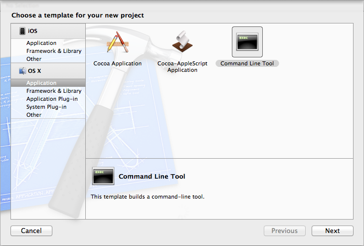
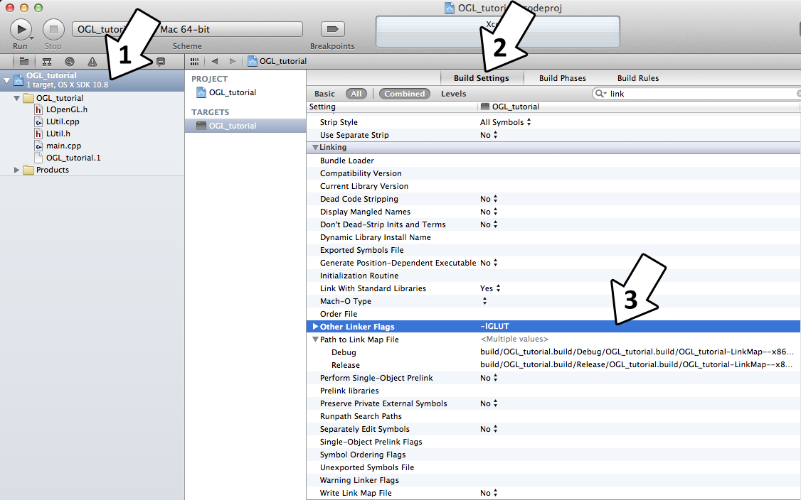
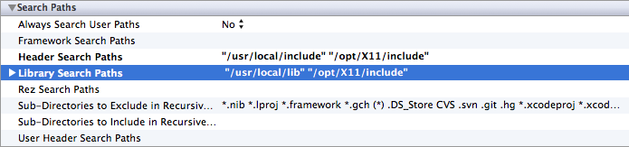
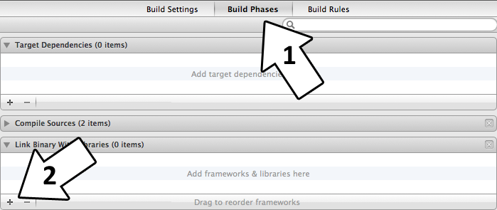
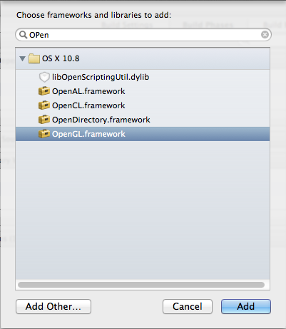

Setting up freeGLUT on XCode 4.4
Last Updated 9/08/12
After installing freeGLUT on OS X, it's time to set up XCode.
1)Start up XCode and create a command line tool project.
Remove the main.cpp file autogenerated for the project as we're not using it. Go download the source for lesson 01. Add the source files inside to your project.
2)Click on your project to reveal the Build Settings tab. Click on the Build Settings tab. Under in the Linking section in the Other Linker Flags add -lGLUT. This will make the project link with the freeGLUT Unix library we installed.
3)In the Search Paths section add
This makes it so XCode will find the header/library files for XQuartz (/opt/X11/) and freeGLUT (/usr/local/).
4)Click on the Build Phases Tab, open up Link Binary with Libraries and add the OpenGL framework.
Now build. If there are any errors, make sure you didn't skip a step.
Now that you have OpenGL and freeGLUT compiling, it time to go onto part 2 of the tutorial.

Remove the main.cpp file autogenerated for the project as we're not using it. Go download the source for lesson 01. Add the source files inside to your project.
2)Click on your project to reveal the Build Settings tab. Click on the Build Settings tab. Under in the Linking section in the Other Linker Flags add -lGLUT. This will make the project link with the freeGLUT Unix library we installed.

3)In the Search Paths section add
"/opt/X11/include" "/usr/local/include"
to the Header Search Paths and"/opt/X11/lib" "/usr/local/lib"
to the Library Search Paths
This makes it so XCode will find the header/library files for XQuartz (/opt/X11/) and freeGLUT (/usr/local/).
4)Click on the Build Phases Tab, open up Link Binary with Libraries and add the OpenGL framework.


Now build. If there are any errors, make sure you didn't skip a step.
Now that you have OpenGL and freeGLUT compiling, it time to go onto part 2 of the tutorial.